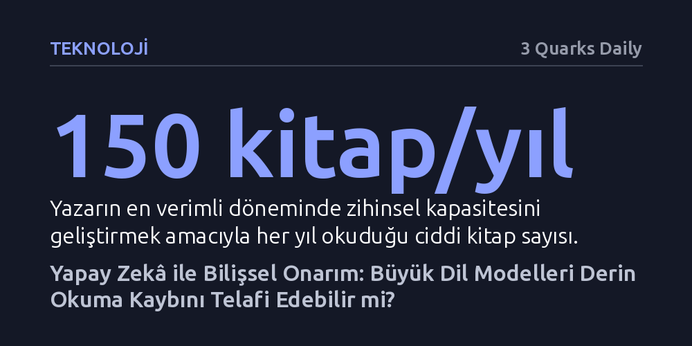

TEKNOLOJI · 3 Quarks Daily · 2026-10-12
Yazar, yaşlanma ve dikkat dağınıklığı nedeniyle yarıya inen derin okuma kapasitesini büyük dil modelleriyle telafi etmeyi öneriyor. Modelin hazırlayacağı kişiselleştirilmiş bir saatlik odak metinleri, zihinsel bilgi inşasını ve hatırlamayı sürdürülebilir kılmayı hedefliyor.
Yapay zekâyı metin üreten bir araçtan ziyade, zayıflayan insan zihninin derin okuma ve kavrama yetisini ayakta tutan bilişsel bir arayüz olarak yeniden tanımlar.

Yazar, düşünsel hayatının en verimli evresinde yılda yaklaşık 150 ciddi kitap okuduğunu belirtiyor. Her bir kitaba ortalama beş saat ayrılarak ulaşılan bu hacim, yıllık toplam 8.760 saatlik yaşam bütçesi içinden 750 saatin doğrudan zihinsel kapasite inşasına yatırılması anlamına geliyordu. Yazar için bu yoğun mesai, sadece bilgi biriktirmek değil; beynin anlama, ilişkilendirme ve derin muhakeme mekanizmalarını canlı tutan vazgeçilmez bir yatırımdı.
Bu okuma pratiği pasif bir metin tüketimi şeklinde işlemiyordu. Metnin yankı uyandırmayan kısımları hızlıca taranıp geçilirken, ilgi çeken ve düşündüren pasajlara yoğun biçimde odaklanılıyordu. Ardından okur, kendi zihninde yazarın düşünce tarzını canlandırıp onunla tartışmaya girişiyor, fikirleri içselleştirerek kendi bilişsel bilgi yapılarını bu zihinsel diyalog üzerinden sağlamlaştırıyordu.
Zamanla bu yüksek zihinsel ritim kırıldı ve yıllık okuma hacmi yarı yarıya gerileyerek 75 kitaba, yani haftada yaklaşık 1,5 kitaba kadar düştü. Üstelik geriye kalan bu listenin yaklaşık yüzde 40'ını da yeni fikirler keşfetmek yerine, geçmişte okunmuş düşünsel ustalar ve hasımlarla bağı tazelemeyi amaçlayan yeniden okumalar oluşturmaya başladı.
Yazar, bu ciddi düşüşün ardındaki nedenleri iki eşit parçaya ayırıyor: Yarısı yaşın ilerlemesiyle azalan fiziksel ve zihinsel enerjiden, diğer yarısı ise zamanın başka içerikleri okumaya ve izlemeye kaymasından kaynaklanıyor. Üstelik bu ikincil içeriklerin de ancak yarısı gerçekten dikkate değer nitelikte. Derin ve odaklanmış okumanın kesintiye uğraması, kişinin bilgi işleme sisteminde onarılması gereken somut bir zihinsel kapasite kaybına yol açıyor.
Kişisel bilgi işleme sürecindeki bu boşluğu telafi etmenin yolu, büyük dil modellerini yeni nesil bir okuma aracı haline getirmekten geçebilir. Buradaki hedef, yapay zekânın kitabı tamamen okurun yerine okuması veya standart özetler çıkarması değil. Bunun yerine modelden, okurun bizzat kendisi okusaydı dikkatini vereceği pasajları tespit edip öne çıkaran ve yaklaşık bir saatte tüketilebilecek odaklanmış bir rehber belge hazırlaması bekleniyor.
Böyle bir metin, okurun hem sınırlı zaman içinde kitabın kritik noktalarıyla zihinsel temas kurmasını sağlayacak hem de ilerleyen süreçte hatırlamayı hızlandıran harici bir hafıza deposu vazifesi görecektir. Tartışmanın asıl düğüm noktası, makine ile yapay zekâ modeli arasındaki teknik etkileşimde değil; dil modeli ile insan zihni arasındaki bilişsel bağın nasıl kurulacağında yatmaktadır.